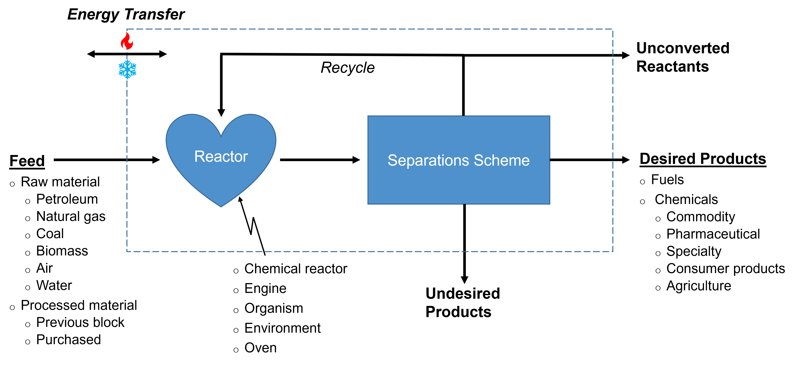
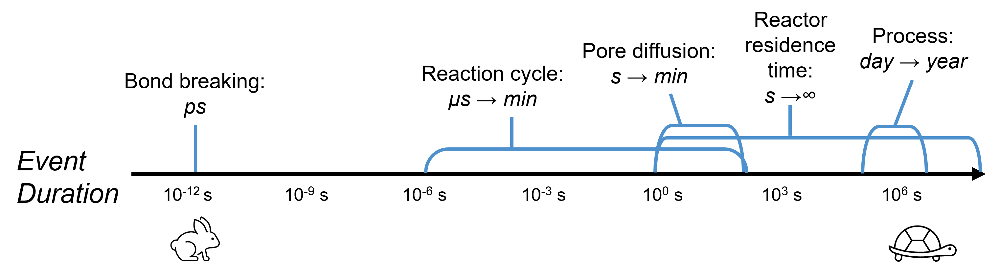
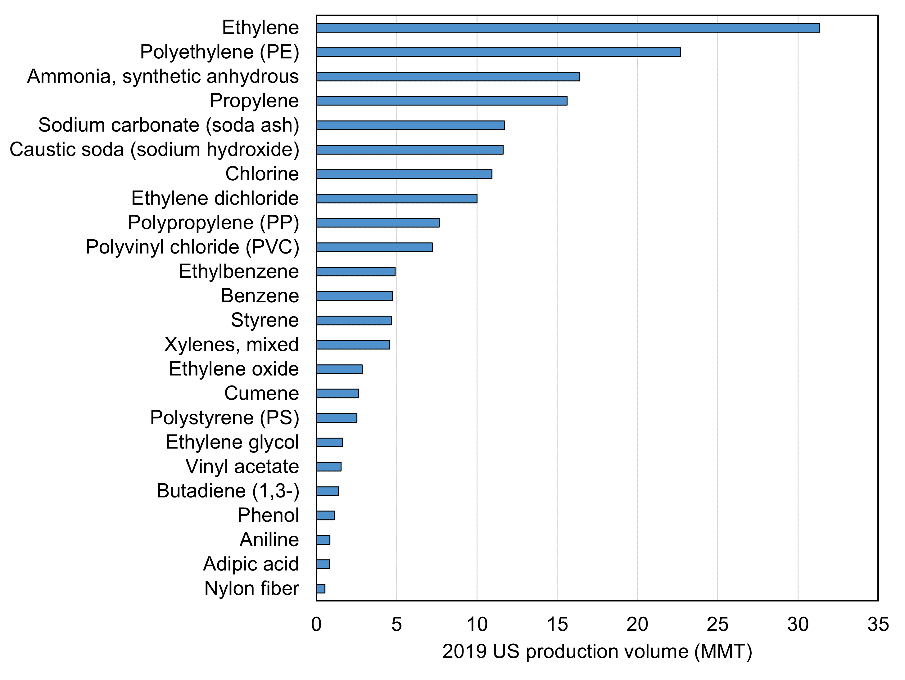

Chapter 1
Contents
Chapter 1¶
Introduction to chemical reaction engineering¶
Topics¶
1.1. Reactor design within a chemical process
1.2. The questions in chemical reaction engineering
1.3. The chemical industry
1.4. Why we care
1.5. Looking ahead: the layout of this “book”
1.1. Reactor design within a chemical process¶
In this “book” we aim to understand the chemical reactor, the unit which often finds itself at the heart of chemical engineering processes. Ultimately it is here that we chemically transform species fed into a process to one or more chemically distinct entities.
Before we venture to understand these units and the reactions occuring within them, we need to understand a bit about chemical engineering processes and where reactor design fits in.
Below Fig. 1-1 shows a general block in a process flowsheet. Crossing the border of this block are (1) a feed entering the system, (2) desired products exiting, (3) unconverted reactants exiting, (4) undesired products exiting, and (5) energy transfer (either in or out).
This process is highly generalized. It may simulate, for example, a full industrial process, a single block within a process, an organism (or part of one), an environmental system. The feeds can therefore include both raw materials and processed materials, the latter of which can be obtained from a previous block or a different process entirely. The intent of this system as a whole may be to (1) convert a lower-cost or lower-demand chemical feedstock to a higher-value or higher-demand product, (2) decompose a harmful material to one which is more benign, or (3) to generate energy and thus power a process or an organism. As such the “reactor” can be anything ranging from a formal chemical reactor to an engine to a living cell to a lake. The reactor outlet may then need further processing, including separations and recycle loops. When we design a chemical reactor, we must therefore keep in mind that separations will be a key part in determining how feasible our process is; the reactor alone will not tell us all we need to know.

Fig. 1-1. A basic block in a chemical process flowsheet.¶
1.2. The questions in chemical reaction engineering¶
What are we typically asking questions about in chemical reaction engineering?
Chemistry: nature of a chemical transformation including the “mechanism” and “pathway”
Reaction rates: the speed of transformation
Selectivity: the fraction of the feed going to a desired product vs an undesired one
Reactor: the basic mode of operation (batch vs continuous), general flow pattern (fully mixed vs plug flow), advanced configurations (e.g., membrane reactors), size, energy requirements, cost, safety
All of these can depend heavily on reaction conditions such as temperature, pressure, and the phase of matter.
How do we address these questions? The “toolkit” we use includes:
Material balances
Rate expressions from mechanisms and experimental data
Thermodynamics (e.g., chemical equilibrium)
Energy balances
Mass transport equations
What time scales are we typically operating in? Generally we will have to consider one or more vastly different time scales at a time ranging from the very short (bond breaking events on the order of picoseconds) to the very long (industrial processes on the order of days to years). These are generally summarized below in Fig. 1.2.

Fig 1.2. The time scales of chemical reaction engineering.¶
1.3. The chemical industry¶
It is helpful to know generally who is making the chemicals we depend on and what those chemicals are. The top 10 chemical companies by revenue in 2019 according to thomasnet.com and statista.com are shown below in Table 1.1.
Table 1.1. Top chemical producers globally¶
Top 10 Chemical Companies |
Country |
2019 Revenue (billion $USD) |
|---|---|---|
1. BASF |
Germany |
66 |
2. Sinopec |
China |
62 |
3. Dow |
USA |
43 |
4. Sabic |
Saudi Arabia |
34 |
5. Ineos |
UK |
32 |
6. Formosa Plastics |
China |
31 |
7. LyondellBassell |
Netherlands |
27 |
8. Mitsubishi Chemical |
Japan |
27 |
9. ExxonMobil |
USA |
27 |
10. LG Chem |
South Korea |
25 |
Other major companies in the USA include Dupont and PPG in the 10-25 billion USD range and Air Products, Chevron Phillips, Eastman, Ecolab, Mosaic, Westlake, Hunstman, Univar, and Celanese in the 5-10 billion USD range. This list is by no means complete, however.
What chemicals do we make in the US? Below Fig 1.3. shows select chemicals obtained from statista.com and their 2019 US production volumes, though the list is by no means complete. For example, it is missing the #1 chemical produced globally: sulfuric acid.

Figure 1.3. Selected major chemicals produced in the US sorted by 2019 US production volume.¶
1.4. Why we care¶
There are a lot of motivations for chemical reactor design, but we can list a few examples below:
Sustainability: Improving reactor designs can lead to lower energy consumption and lessened pollution. The purpose of many reactors is in fact solely to mitigate pollution (such as the catalytic converter in cars). Furthermore, designing novel reactors, processes, and catalysts to accelerate reactions, we can enable the use of more sustainable feedstocks than many of the non-renewable ones we rely upon today.
Health: By understanding the chemical reactions occuring in humans, animals, and nature, we can develop therapies to improve health and wellness.
Profit: Small improvements in reactor design can translate to large changes in process economics, in part because we may be designing very large scale processes. Whatever your motivation, profit will inevitably be a major driving force in your efforts. Ultimately money will talk, so if you care about sustainability or health your challenge will be to develop technologies which address these areas while also generating a profit.
1.5. Looking ahead: the layout of this “book”¶
This book was developed to support an undergraduate chemical engineering course focused on chemical reactor design. This course is divided into the following three modules:
Isothermal reactor design with a single reaction (chapters 2-6)
Multiple reactions and non-isothermal reactions (chapters 7-14)
Reaction mechanisms and catalysis (chapters 15-19)
This breakdown is useful for guiding a course, but it may not be conducive to your uses and therefore will not generally be discussed again. Instead, the book is broken down into the following chapters, each of which contains the material corresponding to approximately one-three 75-minute lectures:
Introduction to chemical reaction engineering
Reactor types and design equations
Conversion, sizing basics, rate expressions, and kinetic theories
Reaction equilibrium and reversible reactions
Reactor design examples
Generating rate expressions from experimental data
Multiple reaction basics
Parallel reactions
Series reactions
Mixed multiple reactions
Bioreactor basics
Energy balances and adiabatic reactors
Heat exchange in reactors
Non-steady state energy balances and runaway reactions
Reaction mechanisms and catalysis
Enzyme kinetics
Heterogeneous catalysis basics
Surface reaction kinetics
Diffusion limitations in heterogeneous catalysis
Outlook
To solve the problems presented in this course, both analytical and numerical methods will need to be applied. Numerical solutions will be obtained with Python-based packages. A basic understanding of Python will be required to complete the course. While there are a wide variety of resources online which you can consult to learn these skills, particularly useful ones for chemical engineering include (1) pycse and various other resources by Dr. John Kitchin of Carnegie Mellon University and (2) online materials for the “Programming for Engineers” course taught by Dr. John Hedengren of Brigham Young University.